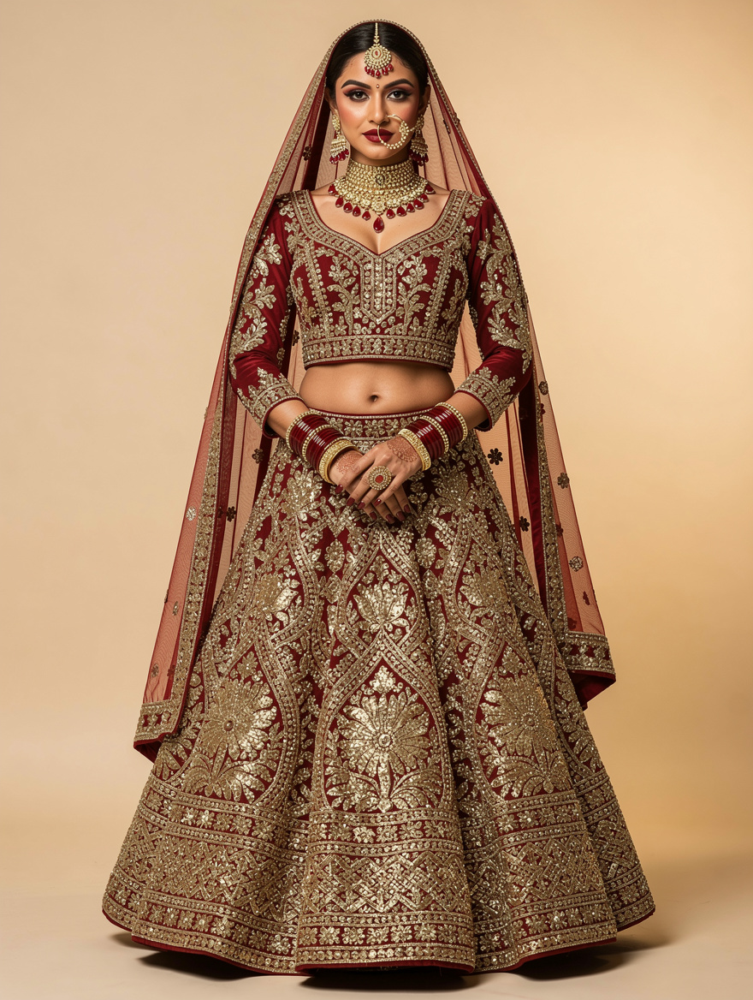

{{ chipN }} · {{ chipType }}
{{ chipNote }}
{{ chipNote }}
Nothing marked yet
Pick a tool on the left, then click anywhere on the render. Every mark takes a short note.
Overlays hidden — the eye brings them back
{{ zoomLabel }}
Drag with Select / Pan to move around · marks stay pinned to the garment
Focus order: 1 toolbar tools → 2 canvas marks → 3 note rows. Enter edits the note · arrow keys nudge a mark · Delete removes it · Esc deselects.